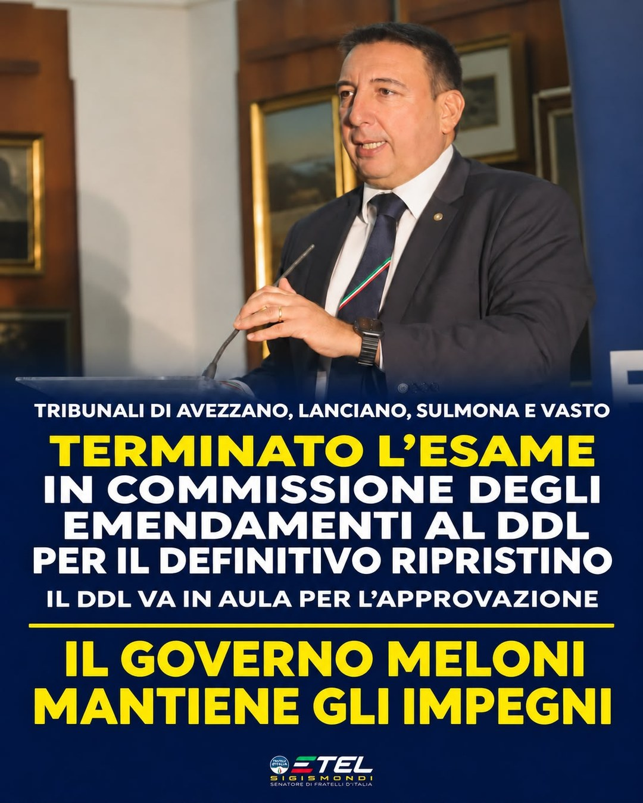

Abruzzo courts, the Chamber committee closes its review of the amendments: “the Meloni Government keeps its commitments”
Unofficial translation of the press release published in Italian.
On 10 November 2026 the Justice Committee of the Chamber votes on the articles and amendments of the Government bill on judicial districts and approves unchanged Article 3 on the courts of Avezzano, Lanciano, Sulmona and Vasto. Once the rapporteur has the mandate, the text goes to the floor of the Chamber and then to the Senate. Sigismondi, Liris and Testa aim to finish by 31 December, when the current extension expires, or with a technical extension if the timetable runs longer.
Why it matters: After years of annual extensions, this is the step that brings the definitive solution for the four courts to the floor. The current extension expires on 31 December 2026.
Part of the dossier: The sub-provincial courts of Abruzzo

“The completion of the review of the amendments in the Justice Committee of the Chamber of Deputies to the bill on judicial districts, which provides for the restoration of the four Abruzzo courts, is a fundamental step forward and shows once again the determination with which the Meloni Government is working to safeguard these places of security and justice.
Shortly, hopefully already this week, the rapporteur should be given the mandate, allowing the measure to reach the floor of the Chamber as early as next week and, once approved, to move on to the Senate. The aim is to complete the process quickly, possibly by the end of the year, in line with the expiry of the current extension, set for 31 December 2026. Should the parliamentary timetable run longer, a technical extension will be needed to allow the bill to complete its passage, guaranteeing in the meantime that the courts keep operating.
One clear political fact remains: the Meloni Government is the only executive that is giving a concrete answer to the demands of the Abruzzo territories to secure a definitive solution for the courts of Avezzano, Lanciano, Sulmona and Vasto, putting an end to the uncertainty of extensions.
Once again, the controversies, the scaremongering and the lies deliberately spread by the centre-left are disproved by the facts. The same centre-left that in recent years claimed to give lessons did not act on the requests of mayors and bar associations when it was in government, leaving the problem unresolved.
The result achieved is the fruit of great teamwork, with the decisive commitment of Prime Minister Giorgia Meloni, the national Government, the chairman of the Justice Committee of the Chamber, Ciro Maschio MP, the President of the Abruzzo Region Marco Marsilio and the centre-right members of parliament from Abruzzo. A shared commitment to give certainty back to citizens, to those who work in justice and to the territories.
Once again the Meloni Government keeps its commitments to the people of Abruzzo.”
So say Fratelli d’Italia members of parliament Etel Sigismondi, Guido Liris and Guerino Testa.
Original title of the press release: Abruzzo courts, committee review of the amendments completed: the Meloni Government keeps its commitments